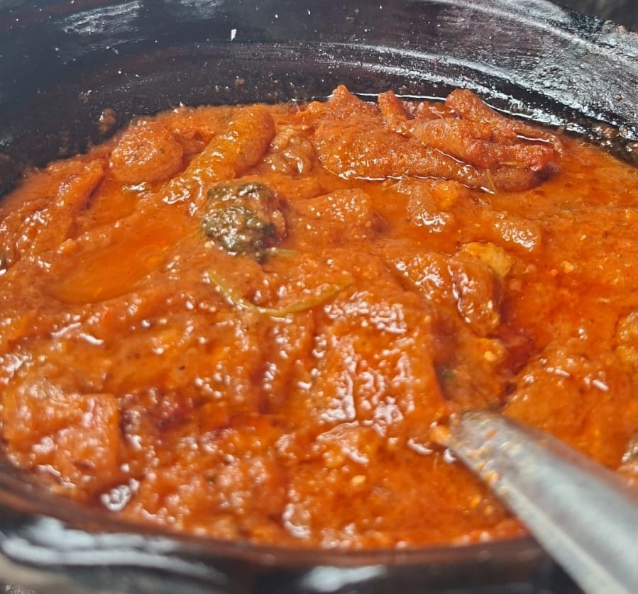

El chicharrón en salsa roja es un platillo tradicional mexicano elaborado con chicharrón de cerdo cocinado en una salsa de jitomate y chile. Se caracteriza por su sabor intenso, ligeramente picante y su textura suave, siendo una opción muy popular para acompañar con tortillas recién hechas.